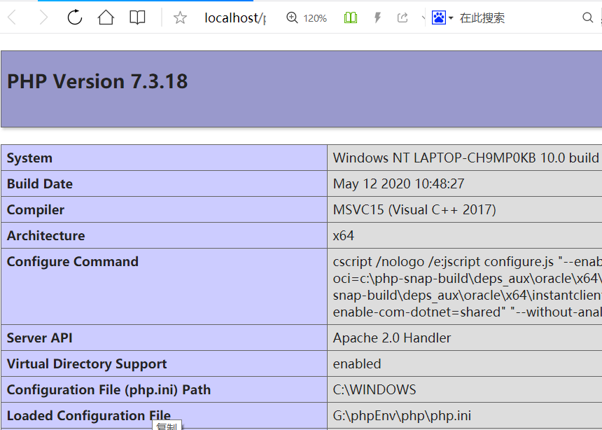

abbrlink: 65423
windows下php环境搭建 Apache2.4 + php7.3.18
一、Apache4.2 安装和配置
下载地址: http://www.apachelounge.com/download/
https://www.apachehaus.com/cgi-bin/download.plx/
以上两个链接都可以下载
| 目录名 |
说明 |
| bin |
Apache可执行文件目录，如httpd.exe、ApacheMonitor.exe等 |
| cig-bin |
CGI网页程序目录 |
| conf |
Apache配置文件目录 |
| htdocs |
默认站点的网页文档目录 |
| logs |
Apache日志文件目录，主要包括访问日志access.log和错误日志error.log |
| manual |
Apache帮助手册目录 |
| modules |
Apache动态加载模块目录 |
安装 配置：
将已经下载好的压缩包解压到你想要的安装的目录下，如G:/phpEnv目录下，这里以G:/phpEnv/Apache24为例
1.使用文本编辑器 编辑G:/phpEnv/Apache24/conf/httpd.conf文件
注意：windows环境下,配置文件所有的 ‘ \ ’ 改为 ‘ / ’
注意必须把前面的 ‘ # ’去掉
当端口被占用时 将端口号修改为其他值
2.使用cmd(管理员) cd到Apache安装目录的bin文件夹下
补充Apache服务卸载:
httpd.exe -k uninstall
补充Apache常用配置
需要注意的是，一旦修改错误，会造成Apache无法安装或无法启动，建议在修改前先备份“httpd.conf”配置文件。
| 配置项 |
说明 |
| ServerRoot |
Apache服务器的根目录，即安装目录 |
| Listen |
服务器监听的端口号，如80、8080 |
| LoadModule |
需要加载的模块 |
| ServerAdmin |
服务器管理员的邮箱地址 |
| ServerName |
服务器的域名 |
| DocumentRoot |
网站根目录 |
| ErrorLog |
用于记录错误日志 |
补充我遇到的错误
错误1
(OS 1783)占位程序接收到错误数据。 : AH00370: Failed to create the ‘localhost’ service
出错原因: 服务安装被360软件拦截
解决方法: 关掉360一类的安全软件
错误2
AH00558: httpd.exe: Could not reliably determine the server’s fully qualified domain name, using fe80::8566:6b7a:4dc2:6593. Set the ‘ServerName’ directive globally to suppress this message
出错原因: Apache配置文件中 缺少ServerName的信息(httpd.conf中ServerName之前 ‘ # ’删掉)
解决方法: 删除 ServerName前的‘ # ’
二、PHP安装和配置
下载地址：
https://windows.php.net/download#php-7.3
注意下载线程安全版

php目录结构解析
ext是PHP扩展文件所在的目录
php.exe是PHP的命令行应用程序
php7apache2_4.dll是用于Apache的DLL模块
php.ini-development是PHP预设的配置模板，适用于开发环境
php.ini-production也是配置模板，适合网站上线时使用
安装和配置：
解压压缩包到 G:\phpEnv\php下
创建php.ini：将php目录下php.ini-development拷贝更名为 php.ini(php配置文件)
配置扩展目录：打开php.ini
更改内容 ；extension_dir=”ext” ==> extension_dir=”php扩展目录”
配置PHP时区： 打开php.ini PRC:中国时区 UTC：协调世界时
更改内容 ;date.timezone = ==> data.timezone = PRC
在apache的httpd.conf文件中做以下 ==添加内容==
PHPIniDir "G:/phpEnv/php/" #根据实际路径修改
LoadModule php7_module "G:/phpEnv/php/php7apache2_4.dll" #根据实际路径修改
<FilesMatch "\.php$">
setHandler application/x-httpd-php
</FilesMatch>

修改索引页 ： 打开httpd.conf
#添加 index.php
<IfModule dir_module>
DirectoryIndex index.html index.php
</IfModule>
测试 php是否安装成功
在网页目录(下面这个目录)下 新建文件 phpinfo.php
# phpinfo.php 文件内容
<?php
phpinfo();
?>
完成后，在浏览器中访问http://localhost/phpinfo.php 出现以下成功
注意：先重启服务 httpd -k restart
